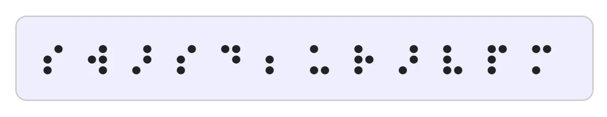
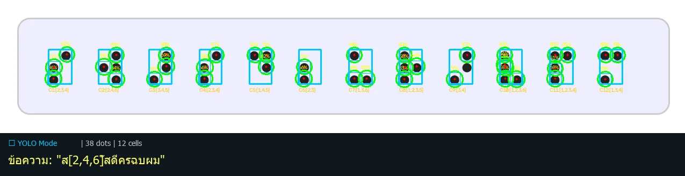
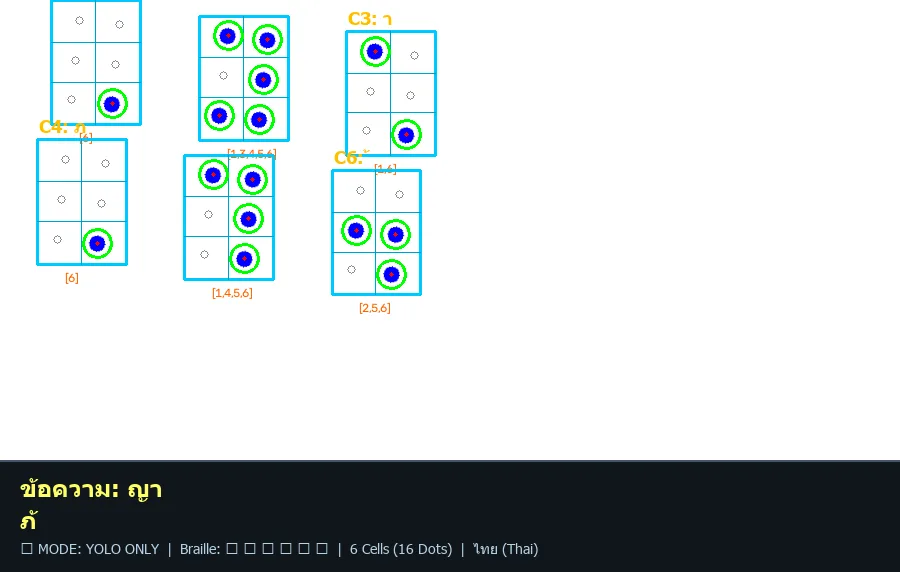
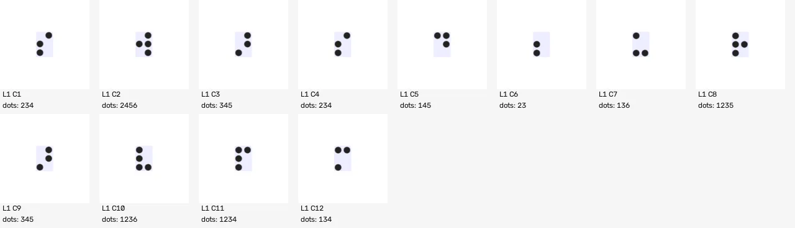
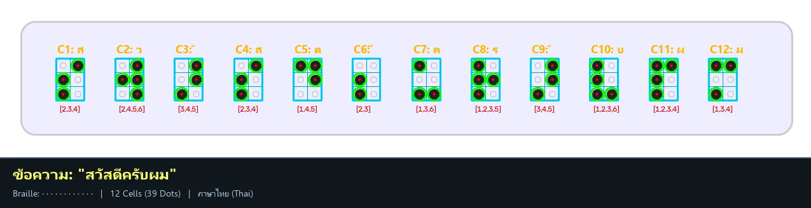
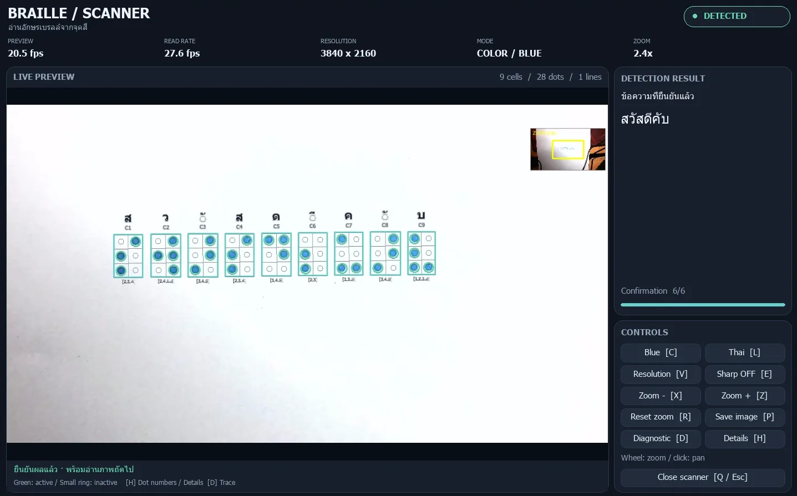

Braille-to-Speech Scanner
ต้นแบบระบบอ่านอักษรเบรลล์ภาษาไทย/อังกฤษจากกล้อง แล้วแปลงเป็นข้อความและเสียงพูด ช่วยให้คนที่อ่านเบรลล์ไม่เป็น เช่น ครู ผู้ปกครอง และเจ้าหน้าที่ ตรวจหรือฟังเนื้อหาเบรลล์ได้ทันที

Overview
ปัญหา
จุดเบรลล์นูนบนกระดาษขาวมีคอนทราสต์ต่ำมาก กล้องทั่วไปแยกจุดได้ไม่แม่นเมื่อแสงเปลี่ยน ระบบจึงอ่านจุดที่แต้มสีน้ำเงินหรือแดง ซึ่งตรวจด้วยสีได้เสถียรกว่าตรวจจากเงา
บทบาทของผม
- งานทีมที่แบ่งงานกันทำ ผมร่วมทำทุกส่วนของระบบ ตั้งแต่ข้อมูลจนถึงเสียงพูด
- เตรียม dataset และ annotate ด้วย Roboflow เทรนโมเดล YOLO แล้วตรวจผลหาจุดที่ตรวจผิดหรือตกหล่น
- ตรวจจับจุดสีด้วย OpenCV (HSV) และจัดกริดเซลล์ 2×3
- ติดตามข้ามเฟรมด้วย optical flow และยืนยันผลหลายเฟรม
- ตัวถอดรหัสเบรลล์ไทย/อังกฤษ (parser + lexicon) และเสียงพูด Piper / Edge TTS
- หน้าจอสแกนเนอร์, automated tests และจัดการโค้ดด้วย Git/GitHub
Tech stack
Python · Ultralytics YOLOv8 · Roboflow · OpenCV · NumPy · Piper TTS · Edge TTS · Git/GitHub
How it works








THAI_CONSONANTS = {
# --- ก - ง ---
frozenset({1, 2, 4, 5}): 'ก', # (dots 1,2,4,5)
frozenset({1, 3}): 'ข', # (high, dots 1,3)
frozenset({1, 3, 6}): 'ค', # (low, dots 1,3,6)
frozenset({1, 2, 4, 5, 6}): 'ง', # (dots 1,2,4,5,6)
# --- จ - ซ ---
frozenset({2, 4, 5}): 'จ', # (dots 2,4,5)
frozenset({3, 4}): 'ฉ', # (high, dots 3,4)
frozenset({3, 4, 6}): 'ช', # (low, dots 3,4,6)
frozenset({2, 3, 4, 6}): 'ซ', # (low, dots 2,3,4,6)
...
}frozenset) ถูกแมปเป็นพยัญชนะไทยตามมาตรฐานเบรลล์ไทย ดูไฟล์เต็มบน GitHub ↗



Features
- อ่านเบรลล์ไทยตามมาตรฐาน รวมสระ วรรณยุกต์ และเครื่องหมาย รองรับอังกฤษ Grade 1
- เลือกความละเอียดกล้องอัตโนมัติ (4K / 2K / 1080p) พร้อม zoom และ pan
- ยืนยันข้อความเมื่อผลนิ่งหลายเฟรม ลดการอ่านผิดจากมือหรือกล้องสั่น
- เสียงพูดภาษาไทยแบบ offline (Piper) และ online (Edge TTS)
- โมเดล YOLO สำหรับเสนอกรอบบริเวณข้อความ
- ข้อจำกัด: อ่านเฉพาะจุดที่แต้มสีน้ำเงินหรือแดง และทดสอบบน Windows เป็นหลัก